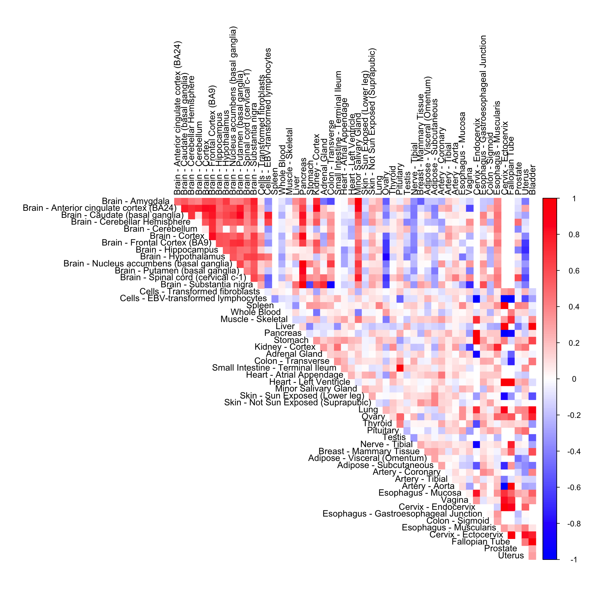
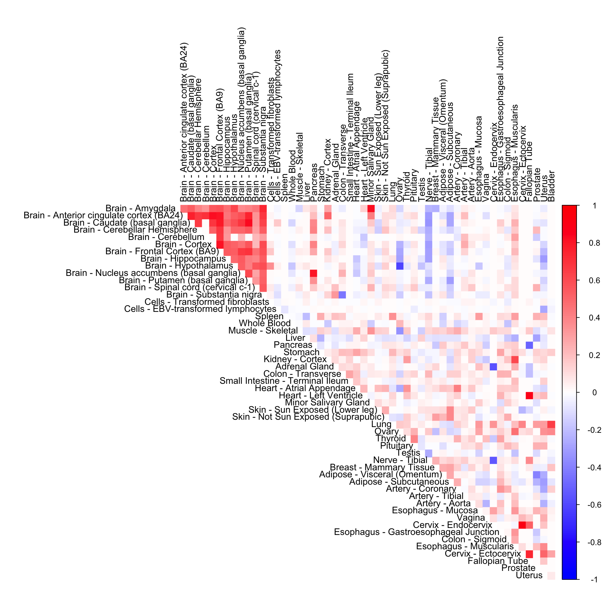
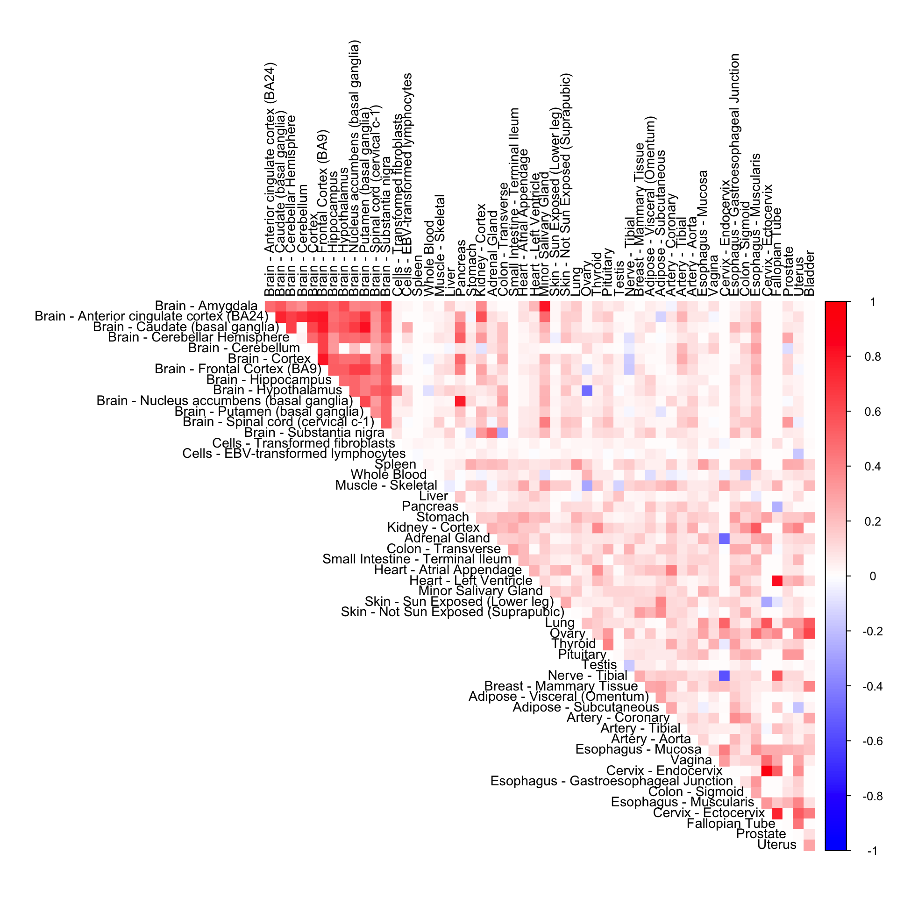
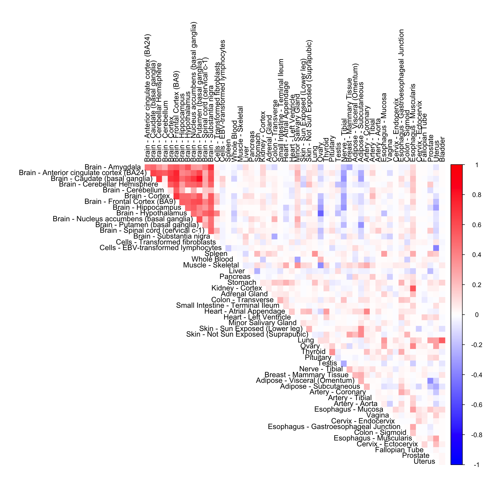
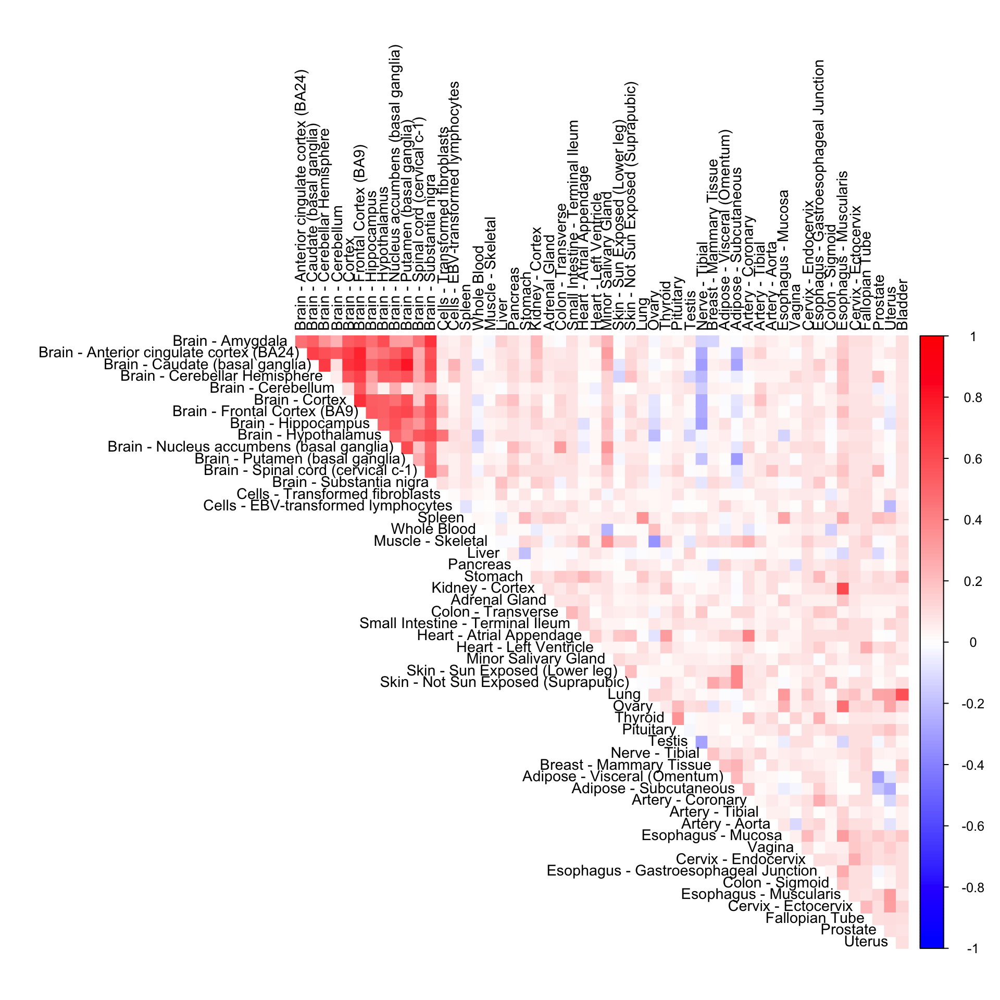
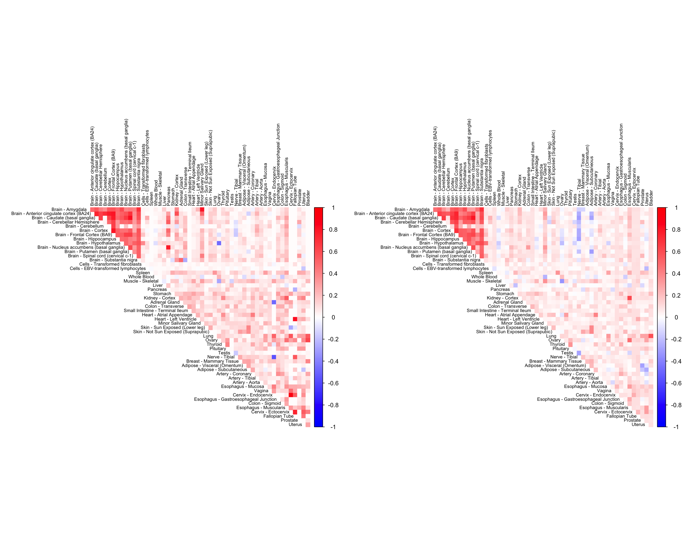

We compare the CorShrink matrix for a gene under two settings
In the first setting, Corshrink is run across all genes for each tissue-pair. We call this genewide CorShrink
In the second setting, Corshrink is run across all tissue-pairs for each gene. We call this the tissuewide CorShrink.
Name of the gene (see code chunk on the side) :
name <- "ENSG00000166819"We load all genewide CorShrink matrices.
library(corrplot)## corrplot 0.84 loadedgenewide_corshrink_nonmode <- get(load("../shared_output/genewide_ash_out_tissue_mat_normal_non_mode.rda"))
genewide_corshrink_normal_mode <- get(load("../shared_output/genewide_ash_out_tissue_mat_normal_mode.rda"))
genewide_corshrink_halfuniform_mode <- get(load("../shared_output/genewide_ash_out_tissue_mat_halfuniform_mode.rda"))
genewide_corshrink_halfuniform_nonmode <- get(load("../shared_output/genewide_ash_out_tissue_mat_halfuniform_non_mode.rda"))We load the sample labels and the frequency of observed pairs of complete observations between any pairs of tissues.
common_samples <- get(load("../shared_output/common_samples.rda"))
gene_names <- as.character(read.table(file = "../data/GTEX_V6/gene_names_GTEX_V6.txt")[,1])
gene_names_1 <- as.character(sapply(gene_names, function(x) return(strsplit(x, "[.]")[[1]][1])))
person_label=read.table("../data/GTEX_V6/person_identifier_labels_with_numbers.txt");
samples_id <- read.table(file = "../data/GTEX_V6/samples_id.txt")[,1]
samples_person <- sapply(samples_id, function(x) return(paste0(strsplit(as.character(x), "-")[[1]][1:2], collapse ="-")))
tissue_labels <- read.table(file = "../data/GTEX_V6/samples_id.txt")[,3]
unique_persons <- unique(samples_person)
unique_tissues <- unique(tissue_labels)
order_index <- c();
U <- unique_tissues
order_index <- get(load("../shared_output/order_index.rda"))
col2 <- c("blue", "white", "red")cor_data <- get(load("../shared_output/cor_tissues_non_ash_voom_pearson.rda"))
numg <- grep(name, gene_names_1)
cor_mat <- diag(1,53)+cor_data[,,numg]cor2mat <- cor_mat[order_index, order_index]
rownames(cor2mat) <- U[order_index]
colnames(cor2mat) <- U[order_index]
corrplot(cor2mat, diag = FALSE,
col = colorRampPalette(col2)(200),
tl.pos = "td", tl.cex = 0.9, tl.col = "black",
rect.col = "white",na.label.col = "white",
method = "color", type = "upper") 
cor3mat <- genewide_corshrink_nonmode[order_index, order_index, numg]
rownames(cor3mat) <- U[order_index]
colnames(cor3mat) <- U[order_index]
corrplot(cor3mat, diag = FALSE,
col = colorRampPalette(col2)(200),
tl.pos = "td", tl.cex = 0.9, tl.col = "black",
rect.col = "white",na.label.col = "white",
method = "color", type = "upper") 
cor4mat <- genewide_corshrink_normal_mode[order_index, order_index, numg]
rownames(cor4mat) <- U[order_index]
colnames(cor4mat) <- U[order_index]
corrplot(cor4mat, diag = FALSE,
col = colorRampPalette(col2)(200),
tl.pos = "td", tl.cex = 0.9, tl.col = "black",
rect.col = "white",na.label.col = "white",
method = "color", type = "upper") cor5mat <- genewide_corshrink_halfuniform_nonmode[order_index, order_index, numg]
rownames(cor5mat) <- U[order_index]
colnames(cor5mat) <- U[order_index]
corrplot(cor5mat, diag = FALSE,
col = colorRampPalette(col2)(200),
tl.pos = "td", tl.cex = 0.9, tl.col = "black",
rect.col = "white",na.label.col = "white",
method = "color", type = "upper") 
tissuewide_corshrink_nonmode <- get(load("../shared_output/ash_cor_PD_voom_pearson_normal_tissuewide_non_mode.rda"))cor6mat <- tissuewide_corshrink_nonmode[order_index, order_index, numg]
rownames(cor6mat) <- U[order_index]
colnames(cor6mat) <- U[order_index]
corrplot(cor6mat, diag = FALSE,
col = colorRampPalette(col2)(200),
tl.pos = "td", tl.cex = 0.9, tl.col = "black",
rect.col = "white",na.label.col = "white",
method = "color", type = "upper") 
tissuewide_corshrink_nonmode <- get(load("../shared_output/tissuewide_pearson_halfuniform_tissuewide_non_mode.rda"))cor7mat <- tissuewide_corshrink_nonmode[order_index, order_index, numg]
rownames(cor7mat) <- U[order_index]
colnames(cor7mat) <- U[order_index]
corrplot(cor7mat, diag = FALSE,
col = colorRampPalette(col2)(200),
tl.pos = "td", tl.cex = 0.9, tl.col = "black",
rect.col = "white",na.label.col = "white",
method = "color", type = "upper") 
We now compare the halfuniform versions of the tissue wide and gene-wide CorShrink models.
par(mfrow = c(1,2))
cor5mat <- genewide_corshrink_halfuniform_nonmode[order_index, order_index, numg]
rownames(cor5mat) <- U[order_index]
colnames(cor5mat) <- U[order_index]
corrplot(cor5mat, diag = FALSE,
col = colorRampPalette(col2)(200),
tl.pos = "td", tl.cex = 0.6, tl.col = "black",
rect.col = "white",na.label.col = "white",
method = "color", type = "upper")
cor7mat <- tissuewide_corshrink_nonmode[order_index, order_index, numg]
rownames(cor7mat) <- U[order_index]
colnames(cor7mat) <- U[order_index]
corrplot(cor7mat, diag = FALSE,
col = colorRampPalette(col2)(200),
tl.pos = "td", tl.cex = 0.6, tl.col = "black",
rect.col = "white",na.label.col = "white",
method = "color", type = "upper") 
This R Markdown site was created with workflowr